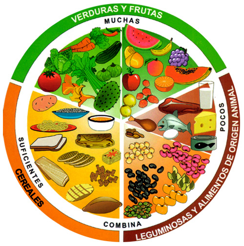
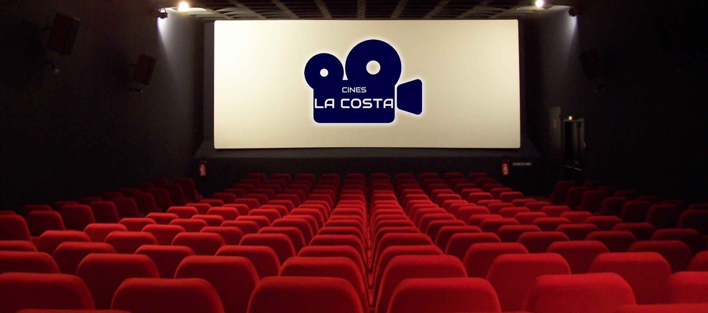

Listas anidadas
comida
- fruta
- Verduras
- lechuga
- cebolla
- zanahoria
- carnes

lista desordenada
- caricaturas
historias en un mundo animado
- gumball
- un show mas
- hora de aventura
- peliculas
historias en menos de 2 horas
- angry birds la pelicula
- son como niños
- como entrenar a tu dragon
- terror
sentimiento de panico en peliculas
- viernes 13
- pesadilla calle elm
- chucky
- recientes
peliculas que salieron hace poco
- minions 2
- mario galaxy
- doomsday
